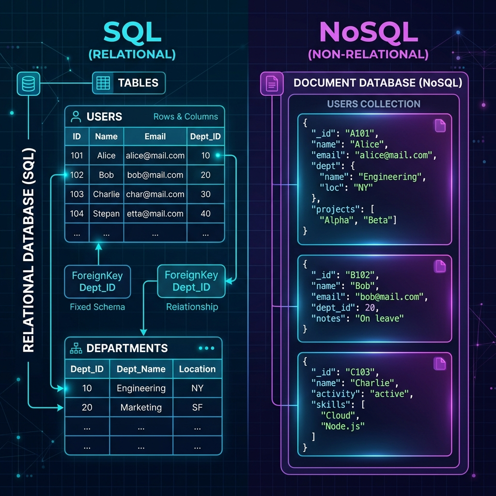
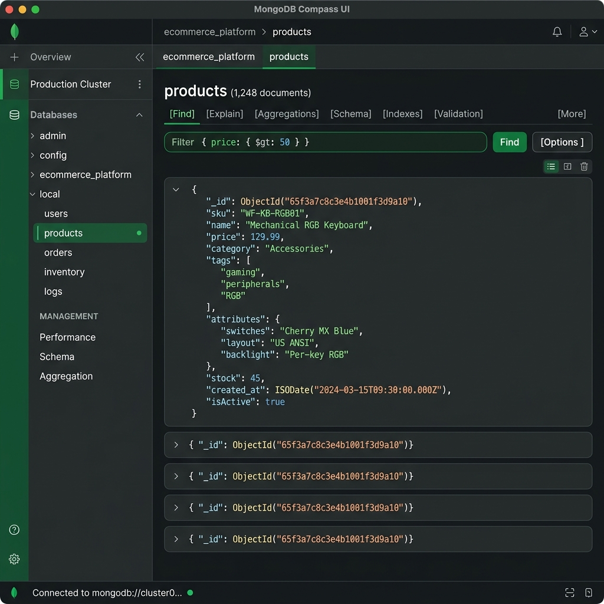

1. ¿Qué son las Bases de Datos No Relacionales?
Las bases de datos no relacionales (o NoSQL) son sistemas de almacenamiento de información que no utilizan el modelo relacional tradicional. A diferencia del modelo introducido originalmente por Edgar F. Codd en 1970 [1], las bases de datos NoSQL permiten esquemas dinámicos para manejar datos no estructurados o semiestructurados, ofreciendo alta escalabilidad horizontal y gran flexibilidad.
— Adaptado del concepto original de Edgar F. Codd [1].

El Teorema CAP (Teorema de Brewer)
Propuesto por Eric Brewer en el año 2000 [2], el Teorema CAP establece que un sistema de datos distribuido solo puede garantizar dos de las siguientes tres propiedades simultáneamente: Consistencia (Consistency), Disponibilidad (Availability) y Tolerancia al particionamiento (Partition tolerance). Gran parte de las decisiones de diseño NoSQL se basan en este principio.
2. Diferencias clave entre Relacionales y No Relacionales
| Característica | Bases de Datos SQL (Relacionales) | Bases de Datos NoSQL (No Relacionales) |
|---|---|---|
| Esquema | Estricto y predefinido (tablas con columnas fijas). | Dinámico y flexible (documentos, grafos, clave-valor). |
| Escalabilidad | Vertical (más CPU/RAM en un único servidor). | Horizontal (añadir más nodos/servidores al cluster). |
| Transacciones | Enfocadas en propiedades ACID (Consistencia estricta). | Siguen el teorema CAP (Consistencia eventual / BASE). |
| Estructura de Datos | Datos altamente estructurados e interrelacionados. | Datos no estructurados (JSON, imágenes, logs de eventos). |
3. Tipos de Bases de Datos No Relacionales
Documentales
Almacenan datos en documentos semiestructurados (normalmente JSON o BSON). Ejemplos: MongoDB, CouchDB.
Clave-Valor
El tipo más simple donde cada elemento tiene una clave única y un valor asociado. Ejemplos: Redis, DynamoDB.
Orientadas a Columnas
Agrupan las columnas en lugar de las filas, ideales para consultas analíticas rápidas en grandes almacenes. Ejemplos: Cassandra, HBase.
Orientadas a Grafos
Utilizan nodos y relaciones para representar datos de redes complejas de contactos o redes sociales. Ejemplos: Neo4j, Amazon Neptune.
4. ¿Qué es un archivo JSON y cuál es su estructura?
JSON (JavaScript Object Notation), popularizado por Douglas Crockford a principios de la década de 2000 [3], es un formato de texto ligero y fácil de leer para el intercambio de datos.
Laboratorio Interactivo: Validador de JSON
Prueba a editar el código JSON de abajo y haz clic en "Validar". Introduce errores (como olvidar una coma) para ver cómo funciona el validador.
5. Guía de Instalación de MongoDB Compass
MongoDB Compass es la interfaz gráfica oficial para explorar e interactuar con tus datos en MongoDB sin necesidad de escribir comandos en consola. Sigue estos pasos para instalarlo:

Descarga el instalador
Ingresa al Portal de descargas de MongoDB y descarga la versión correspondiente a tu Sistema Operativo.
Ejecuta el archivo
Haz doble clic en el instalador descargado y sigue los pasos de configuración rápidos del sistema.
Conéctate a tu base de datos local
Abre Compass y utiliza la URI por defecto mongodb://localhost:27017 para conectarte a tu servidor local de MongoDB.
Referencias Académicas y Citas:
- [1] Codd, E. F. (1970). "A Relational Model of Data for Large Shared Data Banks". Communications of the ACM, 13(6), 377-387.
- [2] Brewer, E. A. (2000). "Towards Robust Distributed Systems". Proceedings of the Annual ACM Symposium on Principles of Distributed Computing.
- [3] Crockford, D. (2006). "The application/json Media Type for JavaScript Object Notation (JSON)". IETF RFC 4627.
Verifica tu Aprendizaje
Responde a las siguientes 5 preguntas basadas en la lección para evaluar tus conocimientos: